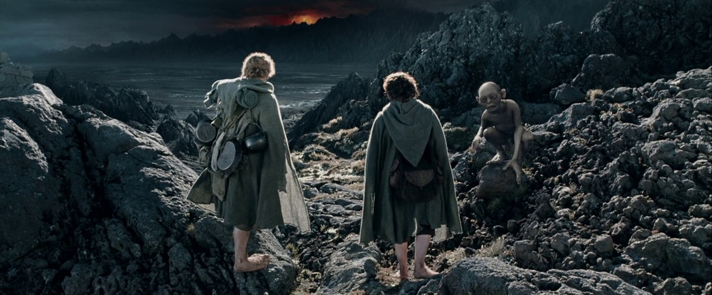
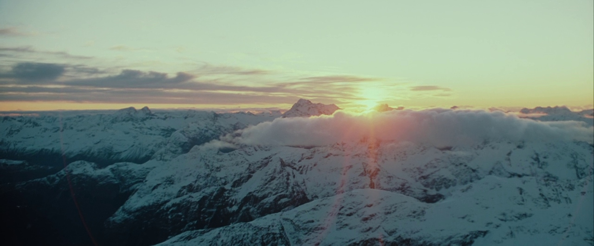
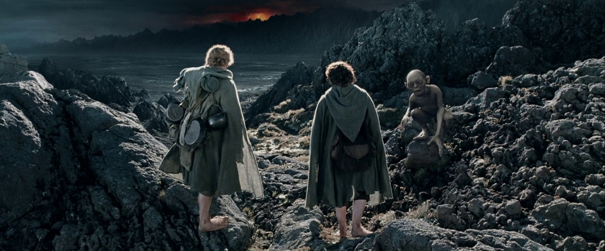
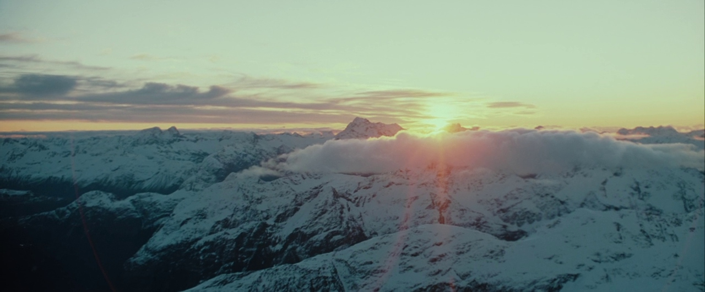

Lord of the Rings: The Two Towers Review

The Lord of the Rings: The Two Towers is where the story of Middle-earth expands in scope, shifting from an intimate quest into a sprawling, multi-threaded epic. Unlike its predecessor, which primarily followed the Fellowship as a single group, this chapter of the saga separates the characters across different landscapes, each facing their own trials. Frodo and Sam tread deeper into the perilous lands of Mordor, burdened by the weight of the One Ring and the growing influence of Gollum. Meanwhile, Aragorn, Legolas, and Gimli pursue the Uruk-hai to rescue Merry and Pippin, only to become entangled in the fate of Rohan, a kingdom on the brink of ruin.
Peter Jackson expertly balances these divergent storylines, ensuring each feels equally vital to the larger narrative. The film transitions seamlessly between the creeping dread of Frodo’s journey, the rising tension in Rohan, and Merry and Pippin’s unexpected alliance with the ancient Ents. This structure enhances the film’s momentum, creating a sense of urgency that builds toward an unforgettable climax. It’s here that The Two Towers truly distinguishes itself—not just as a bridge between two films, but as a riveting adventure in its own right.
The darker tone of the story also allows for deeper character exploration. Frodo's slow unraveling under the Ring’s influence is palpable, as Elijah Wood delivers a haunting portrayal of a soul being consumed by power. Aragorn, too, faces his own internal conflict, torn between duty and destiny as he steps further into his role as a leader. Even side characters like Éowyn, Théoden, and Faramir bring new emotional layers to the story, making the world of Middle-earth feel even richer and more lived-in.
A Cast That Brings Middle-earth to Life
The cast of The Fellowship of the Ring is nothing short of legendary, bringing Tolkien’s characters to life with stunning authenticity. Elijah Wood delivers a heartfelt and vulnerable performance as Frodo Baggins, a humble hobbit burdened with the fate of Middle-earth. His quiet strength and growing resolve make him an incredibly compelling protagonist, drawing audiences into his perilous quest.
But Frodo’s journey would be impossible without the companions by his side. Ian McKellen’s portrayal of Gandalf the Grey is nothing short of iconic, embodying the wisdom, warmth, and power of the beloved wizard. Viggo Mortensen’s Aragorn is both brooding and noble, capturing the internal struggle of a reluctant king. Sean Bean’s Boromir is tragic and deeply human, delivering one of the most powerful performances in the entire trilogy.
Meanwhile, Orlando Bloom’s Legolas and John Rhys-Davies’ Gimli bring both skill and levity to the Fellowship, their growing camaraderie adding depth to the story. And of course, the rest of the hobbits—Sean Astin’s loyal and endearing Sam, Billy Boyd’s playful Pippin, and Dominic Monaghan’s mischievous Merry—infuse the film with heart and humor. Together, this ensemble creates one of the most memorable and beloved casts in cinematic history.
 





The Journey Splinters, but the Story Soars.
The Lord of the Rings: The Two Towers is where the story of Middle-earth expands in scope, shifting from an intimate quest into a sprawling, multi-threaded epic. Unlike its predecessor, which primarily followed the Fellowship as a single group, this chapter of the saga separates the characters across different landscapes, each facing their own trials. Frodo and Sam tread deeper into the perilous lands of Mordor, burdened by the weight of the One Ring and the growing influence of Gollum. Meanwhile, Aragorn, Legolas, and Gimli pursue the Uruk-hai to rescue Merry and Pippin, only to become entangled in the fate of Rohan, a kingdom on the brink of ruin.
Peter Jackson expertly balances these divergent storylines, ensuring each feels equally vital to the larger narrative. The film transitions seamlessly between the creeping dread of Frodo’s journey, the rising tension in Rohan, and Merry and Pippin’s unexpected alliance with the ancient Ents. This structure enhances the film’s momentum, creating a sense of urgency that builds toward an unforgettable climax. It’s here that The Two Towers truly distinguishes itself—not just as a bridge between two films, but as a riveting adventure in its own right.
The darker tone of the story also allows for deeper character exploration. Frodo's slow unraveling under the Ring’s influence is palpable, as Elijah Wood delivers a haunting portrayal of a soul being consumed by power. Aragorn, too, faces his own internal conflict, torn between duty and destiny as he steps further into his role as a leader. Even side characters like Éowyn, Théoden, and Faramir bring new emotional layers to the story, making the world of Middle-earth feel even richer and more lived-in.
The film’s success was reflected in its reception at the Academy Awards, where it won Best Visual Effects and Best Sound Editing while securing a nomination for Best Picture. While it didn’t take home the top prize, its recognition by the Academy signified a turning point for fantasy films, proving that they could be taken seriously as cinematic achievements. The groundbreaking work on Gollum alone was enough to cement the film’s place in history, setting a new standard for motion capture and digital effects.
I Could March to Helm’s Deep a Thousand Times.
If The Fellowship of the Ring was about assembling the pieces, The Two Towers is about seeing them collide. Nowhere is this more evident than in the Battle of Helm’s Deep, one of the most masterfully executed battle sequences in cinematic history. What makes it so effective is not just its scale, but the way Jackson builds tension long before the first arrow is loosed. The rain, the pounding of war drums, the fear in the eyes of the soldiers—it all culminates in an eruption of violence that is both spectacular and deeply personal.
Unlike many large-scale battles in film, Helm’s Deep never loses sight of the individuals fighting within it. Aragorn and Legolas exchange moments of camaraderie in the heat of battle, Gimli provides brief but welcome levity, and Théoden, burdened by years of despair, finds his resolve in the fight for his people’s survival. Even the smallest details, from the trembling hands of young soldiers to the raw brutality of the Uruk-hai, make it feel visceral and real.
Howard Shore’s score further elevates the battle, with pounding war horns and swelling orchestral movements that amplify the stakes. The moment Gandalf arrives at dawn with the Riders of Rohan, Shore’s triumphant music surges in perfect harmony with the on-screen action, delivering a cinematic payoff that is nothing short of breathtaking. It’s a scene that embodies everything great about Jackson’s adaptation—grand spectacle, emotional weight, and an unwavering respect for Tolkien’s world.
I Didn’t Think Gollum Would Be This Good.
Among the many triumphs of The Two Towers, perhaps the most unexpected was the groundbreaking portrayal of Gollum. More than just an impressive technical achievement, Gollum is a fully realized character with depth, complexity, and an unsettling unpredictability that makes every scene he’s in mesmerizing. Andy Serkis delivers a performance that is equal parts tragic and terrifying, bringing to life one of the most iconic figures in fantasy literature.
Gollum is no mere villain—he is a fractured soul, tormented by the power of the Ring and locked in an eternal battle with himself. The film’s depiction of this duality, particularly in the famous “Smeagol vs. Gollum” scene, is a masterclass in character work. As his two personalities wrestle for control, we see flickers of the creature he once was, making his ultimate descent back into treachery all the more heartbreaking.
Visually, Gollum remains one of the greatest CGI creations in film history. Even decades later, his expressions, movements, and mannerisms feel incredibly lifelike, a testament to the groundbreaking motion-capture work of Serkis and Weta Digital. But beyond the technical marvel, it’s the writing and performance that make him so compelling. His twisted sense of loyalty to Frodo, his simmering hatred for Sam, and his unrelenting obsession with the Ring make him one of the most fascinating and tragic figures in the entire trilogy.
Verdict
The Lord of the Rings: The Two Towers is not just a middle chapter—it’s an essential piece of one of the greatest cinematic trilogies of all time. With its breathtaking battle sequences, deeper character exploration, and groundbreaking effects, it stands as a remarkable achievement in its own right. The film expands the world of Middle-earth while maintaining the heart and soul of Tolkien’s story, ensuring that every storyline feels meaningful and compelling.
Though it may not have the same sense of discovery as The Fellowship of the Ring or the grand finale of The Return of the King, The Two Towers offers some of the trilogy’s most unforgettable moments. Whether it’s the thunderous clash at Helm’s Deep, the psychological depth of Gollum, or the rising tension as the war for Middle-earth looms closer, this film proves that a sequel can be just as powerful as its predecessor.
More than two decades later, The Two Towers remains a stunning testament to Peter Jackson’s vision and Tolkien’s legacy. It’s a film that demands to be revisited, studied, and celebrated—a true masterpiece of fantasy cinema.
In This Article